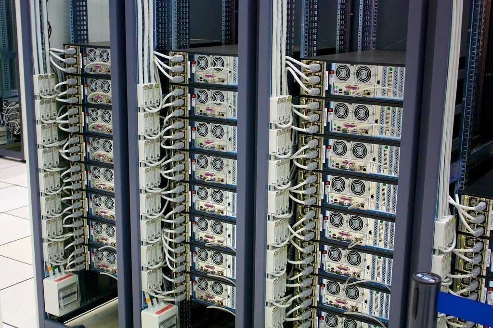
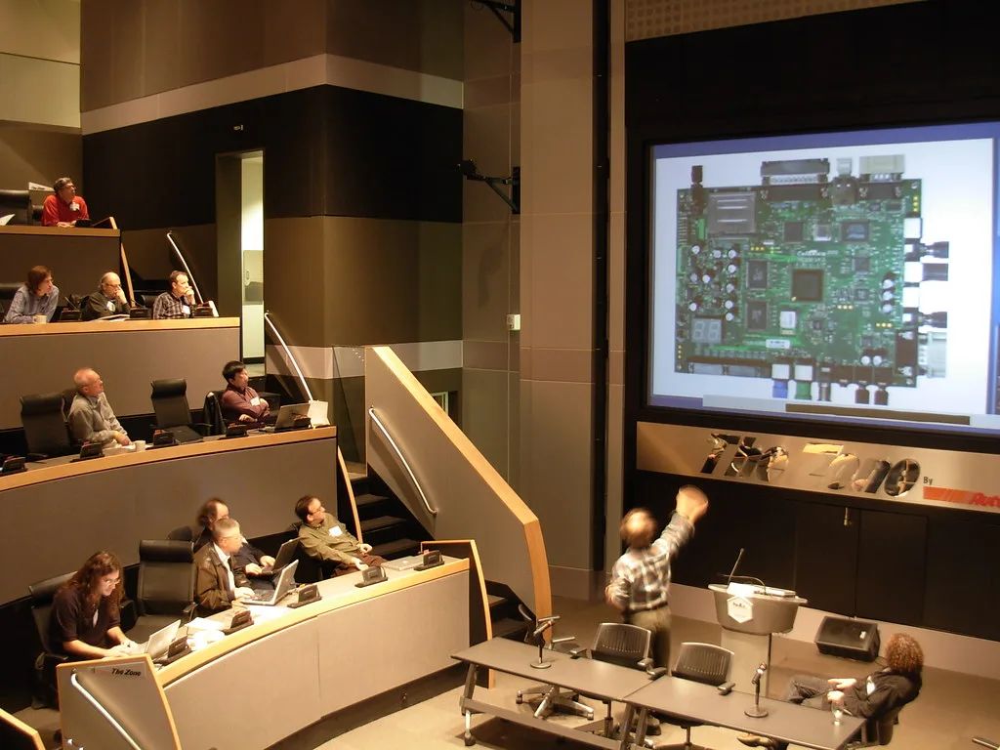

KT가 국내외 인공지능(AI) 모델 수백 종을 하나의 플랫폼에서 골라 쓸 수 있는 기업용 서비스 '토큰팩토리'를 공개했다. 박윤영 KT 대표가 직접 소개한 이 플랫폼은 기업 고객이 여러 AI 모델을 가입부터 사용량 확인, 비용 관리, 결제까지 한 화면에서 처리할 수 있도록 설계됐다. 서비스는 오는 30일 정식 출시되며, 초기에는 KT 자체 개발 모델 7종과 글로벌 모델 66종 등 총 73종으로 시작한다. 그동안 기업들이 AI 모델을 도입할 때마다 공급사별로 별도 계약과 결제 체계를 거쳐야 했던 번거로움을, 단일 창구로 해소하겠다는 취지다.
KT는 이번 서비스를 위해 글로벌 AI 모델 마켓플레이스 '오픈라우터'와 국내 기업 가운데 처음으로 공식 파트너십을 맺었다. 이를 통해 연내 연동 모델을 500종 이상으로 늘려간다는 계획이다. 기업들이 특정 AI 모델 하나에 의존하지 않고, 업무 성격에 맞는 모델을 유연하게 조합해 쓸 수 있게 하겠다는 구상이다. 국내 통신사가 글로벌 AI 모델 마켓플레이스와 공식 제휴를 맺은 것은 이번이 처음이라는 점에서, 통신 업계 안팎의 관심도 적지 않다.

토큰팩토리의 핵심 기술로는 KT가 자체 개발한 '오토 모델 라우터'가 꼽힌다. 이 기술은 사용자가 입력한 질의의 종류와 난이도, 요구되는 품질, 비용 등을 종합적으로 고려해 가장 적합한 AI 모델을 자동으로 선택해준다. 여기에 한국어 특성을 반영한 프롬프트 압축 기술을 더해, 토큰 사용량을 최대 25%까지 줄일 수 있다고 KT는 설명했다. 이는 기업이 매번 어떤 모델을 쓸지 직접 고민하지 않아도, 플랫폼이 알아서 비용과 성능의 균형점을 찾아주는 방식이라는 점에서 기존 AI 도입 방식과 차별화된다는 평가를 받는다.
AI 서비스 이용 비용이 기업의 새로운 고정비 부담으로 떠오르는 상황에서, 토큰 사용량 자체를 줄여주는 기술은 실질적인 비용 절감 효과로 이어질 수 있다는 평가가 나온다. 여러 AI 공급사의 서비스를 따로따로 계약하고 관리해야 했던 기업 입장에서는 창구를 하나로 단순화할 수 있다는 점도 장점으로 꼽힌다.

KT는 토큰팩토리를 우선 기업 고객을 대상으로 서비스한 뒤, 추후 일반 소비자 대상으로도 확대할 계획이라고 밝혔다. 이는 박윤영 대표가 강조해온 'AX(AI 전환) 플랫폼 컴퍼니' 전략의 연장선으로 풀이된다. 통신 인프라를 기반으로 AI 모델 유통과 관리까지 영역을 넓혀, 단순 통신사를 넘어선 AI 플랫폼 사업자로 자리매김하겠다는 의도로 읽힌다. 이미 통신 3사가 저마다 AI 전환을 핵심 성장축으로 내세우고 있는 가운데, KT는 '모델을 직접 만드는 경쟁' 대신 '여러 모델을 잘 연결해주는 경쟁'으로 차별화를 꾀하는 모습이다.
업계에서는 다만 매출 확대로 이어지려면 실제 기업 고객이 얼마나 빠르게 유료 전환을 하느냐가 관건이라는 분석도 나온다. 여러 AI 모델을 한 플랫폼에서 비교·전환할 수 있게 되면 기업 고객의 '벤더 종속' 부담이 줄어드는 대신, 플랫폼 운영사인 KT로서는 모델 공급사와의 협상력과 과금 구조를 어떻게 설계하느냐가 수익성의 관건이 될 전망이다. KT는 연말까지 모델 수를 500종 이상으로 늘리는 한편, 금융·제조·공공 등 주요 산업군별 맞춤 활용 사례를 추가로 선보일 예정이라고 전했다.